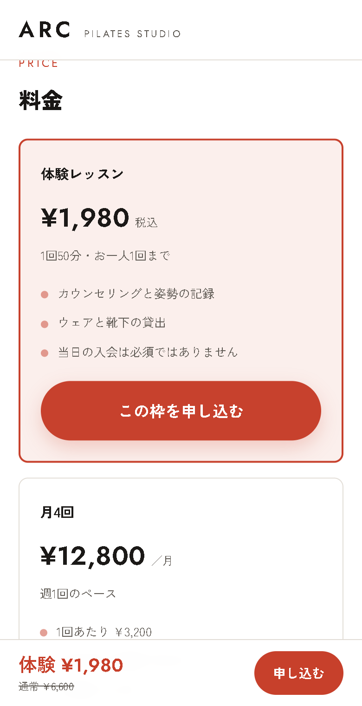
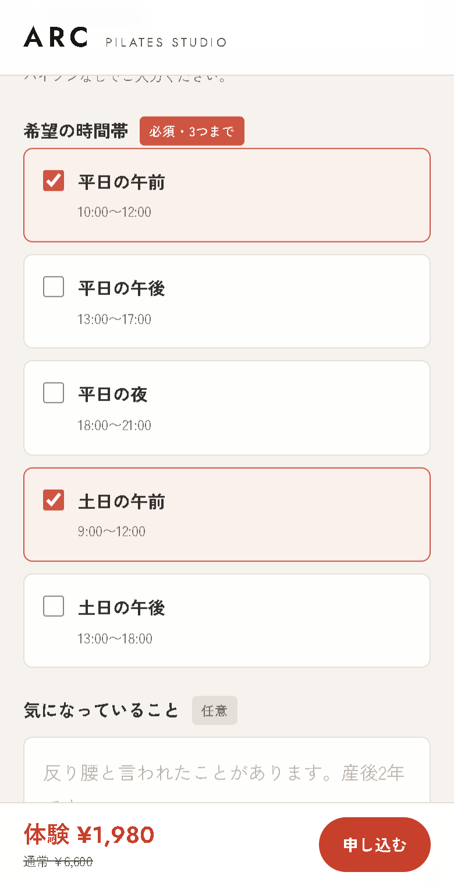
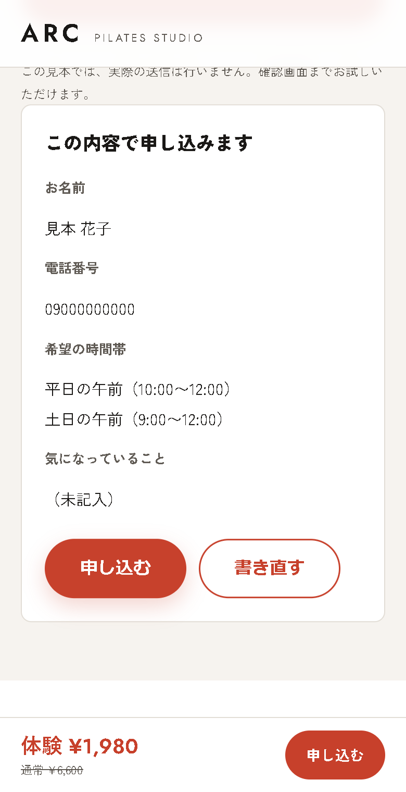

ホームページ制作
教室・サロン向け
教室・サロン向け
体験の案内から、
申し込み画面まで。
申し込み画面まで。

架空の制作見本
頼めるものを最初に。
声
教室やサロンのホームページ。申し込みの画面まで作れます。
映像
料金の画面から確認画面へ。冒頭からホームページ制作の宣伝だと示す。
SNSへの通常投稿用 · 提案 01
教室やサロンの方に、「自分のお店のホームページも相談できそう」と思ってもらうための1本です。自作の見本を実際に操作し、どんなことを頼めるかを見せます。
こちらの提案：縦型9:16・約30秒前後・合成ナレーション・BGMなし。声に合わせて長さを調整します。

声
教室やサロンのホームページ。申し込みの画面まで作れます。
映像
料金の画面から確認画面へ。冒頭からホームページ制作の宣伝だと示す。
声
体験の内容と料金を見て、
映像
体験レッスンの内容と、1,980円・50分の表示へゆっくり寄る。

声
希望の時間帯を選ぶ。
映像
平日の午前、土日の午前を順にタップし、選ばれた色の変化を見せる。

声
入力した内容を、最後に確認。
映像
確認ボタンを押して画面が変わり、選んだ2つの時間帯に寄る。送信確定は見せない。
声
自分のお店のホームページも、こんなふうに。開業や作り直しのご相談は、DMへ。
映像
制作見本を小さく収め、DMの案内を大きく出して読める時間を取る。